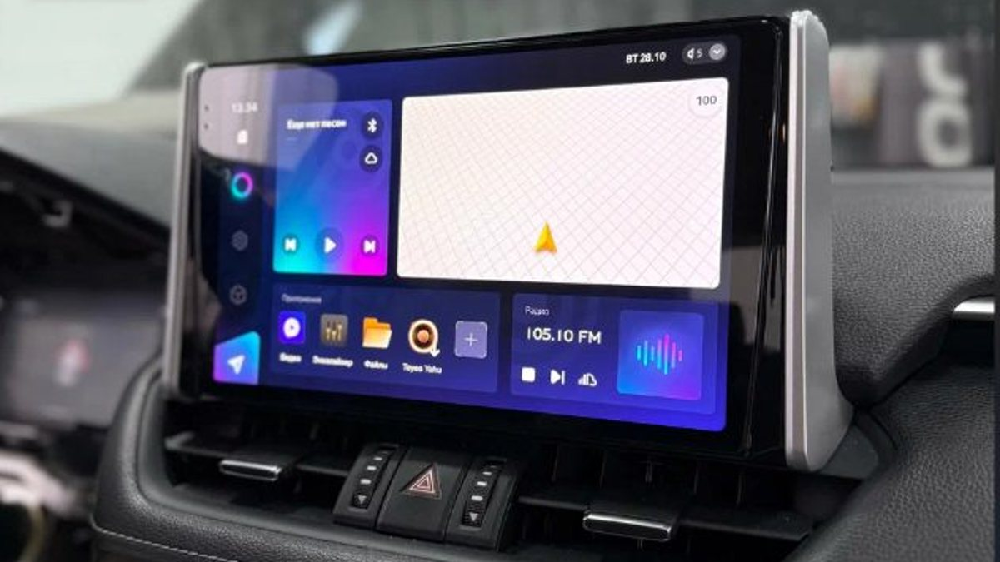

Вчера вечером вы полчаса настраивали эквалайзер, раскладывали иконки на рабочем столе и привязывали телефон. Утром во дворе в Заволжье минус, стекло в инее, вы заводите машину – и магнитола показывает логотип, как в первый день. Эквалайзер плоский, телефон не подключён, громкость на середине. Вчерашние полчаса ушли в никуда.
Это не всегда брак. Чаще дело в подключении или в нескольких настройках, которые после установки никто не трогал. Разберём по симптомам, от самого частого.

Каждый раз грузится заново и всё забывает
Если магнитола при каждом запуске машины стартует с логотипа и сбрасывает настройки, первым делом подозревайте питание. У Android-магнитолы два важных провода: постоянный плюс и плюс зажигания. По первому она живёт, пока машина стоит, и уходит в режим сна. По второму понимает, что зажигание включили.
Если при установке их объединили или посадили на один провод, магнитола после каждого выключения теряет питание полностью. Отсюда и долгая загрузка, и забытые настройки. Обратная ошибка – когда устройство не засыпает вовсе и за ночь подсаживает аккумулятор, что зимой особенно неприятно.
Это не лечится настройками в меню. Это проверяет и исправляет тот, кто ставил магнитолу.
Тормозит и думает по несколько секунд
Посмотрите, что запущено. Многие ставят всё подряд: два навигатора, три плеера, мессенджеры, приложения для регистратора. Часть из них стартует вместе с системой и висит в памяти. Уберите лишнее, а в настройках отключите автозапуск того, что вам не нужно каждую поездку.
Второе – тяжёлая оболочка и живые обои. Красивый анимированный рабочий стол ест ресурсы, которых на скромном устройстве немного. Простой лаунчер и статичная картинка часто дают заметную разницу.
Третье – обновления. Отключите автоматическое обновление приложений по мобильному интернету: магнитола, которая в пробке на мосту качает обновления, будет думать над каждым нажатием.
Если после чистки устройство всё равно тормозит на навигаторе и музыке, скорее всего, ему просто не хватает памяти. Тут настройками не помочь.

Звук стал хуже, чем был со штатной
Настройка андроид магнитолы почти всегда начинается со звука, и почти всегда его не трогают. Включите эквалайзер, но не задирайте все полосы вверх: громче не станет, станет грязнее. Проверьте баланс и фейдер – иногда после установки звук смещён к одной двери. Если в меню есть настройка под расположение динамиков и задержки, она стоит того, чтобы потратить на неё время, но лучше доверить её тому, кто умеет.
И проверьте громкость самого телефона, если музыка идёт по Bluetooth: при тихом телефоне магнитола выкручивает громкость до упора, и звук начинает шуметь.
Камера, кнопки руля, время
Камера заднего вида не включается сама при задней передаче – значит, не подключён или не настроен сигнал заднего хода. Кнопки на руле не реагируют – в настройках есть раздел для обучения кнопок или выбора переходника под машину. Время сбивается – включите синхронизацию по сети или спутникам и проверьте часовой пояс.
Любую из этих мелочей можно пережить, но вместе они делают так, что вы ругаетесь на магнитолу каждый день.
Что сделать сегодня
Если магнитола забывает настройки после каждого выключения – это вопрос к подключению, а не к вам. Остальное попробуйте по списку выше, на стоянке, без спешки. Если не помогло, запишите, что именно происходит и когда: при старте, на морозе, в навигаторе. Так проблему найдут быстрее.
Мы в Ярославле – студия «Автостиль», проспект Октября, 82б. Мы подбираем, ставим и настраиваем Android-магнитолы, а на работы и оборудование даём гарантию. Подробнее – на странице про Android-магнитолы, телефон +7 902 220-75-55.